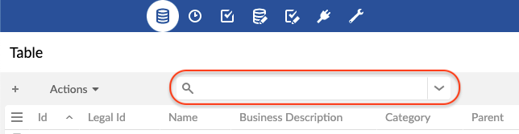

Viewing data
TIBCO EBX® offers different ways to list records. This chapter presents how to sort, search, and display records in varying ways, and according to different user profiles, through to the concept of 'Views'.
'View' menu
The 'View' drop-down menu allows accessing all available views and management features.
Views are managed directly in the 'View' menu toolbar, available on each listed view: 'View' menu toolbar.
Views can also be grouped. An administrator has to beforehand define groups in 'Views configuration' under the 'Groups of views' table. The end-user can then set a view as belonging to a group, through the field 'View group' upon creation or modification of the view. See 'View description' for more information.
Sorting data
Sort criteria control the order in which records are presented.
Use the 'Select and Sort' button at the top left of the table to define specific sorting criteria.
There are two types of sorting:
sorting by relevance, used in the quick search,
sorting by column.
Sorting by column
The 'Sorting criteria' dialog box offers:
on the left, the list of sorted columns,
on the right, the list of unsorted columns.
Use the ← → arrow buttons to toggle columns from one list to another.
Use the ↑ ↓ arrow buttons to change the priority order of the column.
To change the sort order of a column, use the 'ASC' (ascending) or 'DESC' (descending) button that appears on the mouse-over.
Quick Search

The quick search is used to easily find a result in a tabular or hierarchical view.
It does not differentiate between upper and lower case. It allows you to search for several terms at once (separated by spaces). By default, the records found are sorted by relevance.
See also
Special characters
The quick search offers special characters to refine your search.
| Makes it required that the word be present in the result. Prevents the search engine from excluding this word from the search. Note Works with Example: +flute +bach ↳ Finds results with required flute and required bach. Results with only flute or only bach will be ignored. |
| Excludes the word from the result. Note Works with Example: bach -flute ↳ Find results with bach, but without flute. |
... | Specifies that the search can change 2 characters of the word to find it. To allow for a single character to change, use Note Works with Example: handel~ ↳ Find results with a word that is handel, with 1 or 2 letters differing. |
| Replaces an unknown character. Example: ?uttle ↳ Finds results with a word starting with any character, and ending with uttle. |
| Replaces several unknown characters. Example: rachmanino* ↳ Find results with a word beginning with rachmanino. |
| Find the exact match of the phrase. Note Can be surrounded by Example: "Johann Sebastian Bach" ↳ Find results containing exactly Johann Sebastian Bach. |
| Allows grouping words to apply a special character NoteYou can make groups of groups. Example: bach +(flute piano) ↳ Find the results with possibly bach, and necessarily flute or piano. |
Note
These special characters can also be used in the documentation search engine.
Searching and filtering data
The search pane is hidden by default and accessible via the  icon located to the right of the quick search in the table toolbar or the hierarchical view.
icon located to the right of the quick search in the table toolbar or the hierarchical view.
The quick search and the criteria lines combine to narrow the search (restricting the result to fewer and fewer records).
It is possible to deactivate a criteria line by unchecking it. The deactivated criteria are not kept during a save.
The trashcan button at the end of the line of each criterion permanently deletes the criterion.
To save the filter applied to a search, use the 'Save' button. Saving takes into account the quick search and all active criteria.
To recall a saved filter, use the 'Load' button. Loading replaces the quick search and the whole criteria panel. Click on the 'Apply' button to start the new search.
When a view is applied, it ensures that it is displayed according to its configuration. All existing criteria in the search panel are therefore removed. The view can contain a set of search criteria, which are applied together with the at the same time as the view.
Some operators (such as 'matches') allow to use Lucene regular expressions. See technical specifications of Lucene's regex pattern for more information.
Search on a field
All searchable fields are available.
Validation filter
In field selection, the validation criteria display the records as of the last validation performed.
Note
This filtering only applies to records of the table that have been validated at least once by selecting Actions > Validate at the table level from the workspace, or at the dataset level from the navigation pane.
To filter on the validation severity level (independent from validation Message), use the 'Severity' validation criterion. Available levels are: 'Errors', 'Warnings' and 'Information'.
To filter on the validation message (independent from validation Severity level), use the 'Message' validation criterion.
Custom table searches
For backward compatibility, the feature for custom searching and filtering records is still operational and accessible via the icon  in the workspace. The icon and feature are only available when at least one custom filter exists.
in the workspace. The icon and feature are only available when at least one custom filter exists.
Additional custom filters can be specified for each table in the data model.
Views
It is possible to customize the display of tables in EBX® according to the target user. There are two types of views: tabular and hierarchical.
A view can be created by selecting View > Create a new view in the workspace. To apply a view, select it in View > name of the view.
Two types of views can be created:
'Simple tabular view': A table view to sort and filter the displayed records.
'Hierarchical view': A tree view that links data in different tables based on their relationships.
View description
When creating or updating a view, the first page allows specifying general information related to the view.
Documentation | Localized label and description associated with the view. |
Owner | Name of the owner of the view. This user can manage and modify it. (Only available for administrators and dataset owners) |
Share with | Other profiles allowed to use this view from the 'View' menu. |
View mode | Simple tabular view or hierarchical view. |
View group | Group to which this view belongs (if any). |
Simple tabular views
Simple tabular views offer the possibility to define criteria to filter records and also to select the columns that will be displayed in the table.
Displayed columns | Specifies the columns that will be displayed in the table. |
Sorted columns | Specifies the sort order of records in the table. See Sorting data. |
Filter | Defines filters for the records to be displayed in the table. |
Pagination limit | Forces a limit to the number of visible records. |
Grid edit | If enabled, users of this view can switch to grid edit, so that they can edit records directly from the tabular view. |
Disable create and duplicate | If 'Yes', users of this view cannot create nor duplicate records from the grid edit. |
Hierarchical views
A hierarchy is a tree-based representation of data that allows visualizing relationships between tables. It can be structured on several relationship levels called dimension levels. Furthermore, filter criteria can be applied, to define which records will be displayed in the view.
Hierarchy dimension
A dimension defines dependencies in a hierarchy. For example, a dimension can be specified to display products by category. You can include multiple dimension levels in a single view.
Hierarchical view configuration options
This form allows configuring the hierarchical view options.
Display records in a new window | If 'Yes', a new window will be opened with the record. Otherwise, it will be displayed in a new page of the same window. |
Prune hierarchy | If 'Yes', hierarchy nodes that have no children and do not belong to the target table will not be displayed. |
Display orphans | If 'Yes', hierarchy nodes without a parent will be displayed. |
Display root node | If 'No', the root node of the hierarchy will not be displayed in the view. |
Root node label | Localized label of the hierarchy root node. |
Toolbar on top of hierarchy | Allows setting the toolbar on top of the hierarchy. |
Detect cycle | Allow cycle detection and display in a recursive case, the oldest node record will be chosen as the cycle root. Limitation: does not work in search or pruned mode. |
Detect leaf | Allows detecting whether the member is a leaf or not. The leaf detection is very costly for large volumes of data. Thus, it is recommended to disable this option when the query response is delayed to display the hierarchy view. This property is always disabled for orphans' parent members. |
Labels
For each dimension level that references another table, it is possible to define localized labels for the corresponding nodes in the hierarchy. The fields from which to derive labels can be selected using the built-in wizard.
Filter
The criteria editor allows creating a record filter for the view.
Sort strategy
For each dimension level, it is possible to choose one of the following sort strategies:
Default | Nodes are sorted by label in alphabetical order |
Sort by columns | Nodes are sorted by selected column(s). The direction (ascending/descending) can be chosen for each column. |
Sort by ordering field | Nodes are sorted by a hidden numeric field, which allows users to dynamically change the order of sibling nodes in the hierarchy view. This strategy is available only if there is at least one 'Hidden' numeric field in the table. In order to enable this option, you must designate an eligible ordering field defined in the table on which the hierarchical view is applied. An ordering field must have the 'Integer' data type and have a 'Hidden' default view mode in its advanced properties in the data model definition. Except when the ordering field is in 'read-only' mode or when the hierarchy is filtered, any field can be repositioned. AttentionDo not designate a field that is meant to contain data as an ordering node, as the data will be overwritten by the hierarchical view. |
Actions on hierarchy nodes
Each node in a hierarchical view has a menu  containing contextual actions.
containing contextual actions.
Leaf nodes can be dissociated from their parent record, using 'Detach from parent'. The record then becomes an orphan node in the tree, organized under a container "unset" node.
Leaf nodes can also change parent nodes, using 'Attach to another parent'. If, according to the data model, a node can have relationships to multiple parents, the node will be both under the current parent and added under the other parent node. Otherwise, the leaf node will be moved under the other parent node.
View sharing
Users having the 'Share views' permission on a view are able to define which users can display this view from their 'View' menu.
To do so, simply add profiles to the 'Share with' field of the view's configuration screen.
View publication
Users having the 'Publish views' permission can publish views present in their 'View' menu.
A published view is then available to all users via Web components, workflow user tasks, data services and perspectives. To publish a view, go to the 'View menu', click on the Edit button displayed on the mouseover of a listed view and add a 'Publication name' to the view.
Views management
Manage recommended views
When a user logs in with no view specified, their recommended view (if any) is applied. Otherwise, the default view is applied. The 'Manage recommended views' action allows defining assignment rules of recommended views depending on users and roles.
Available actions on recommended views are: change order of assignment rules, add a rule, edit existing rule, delete existing rule.
Thus, for a given user, the recommended views are evaluated according to the user's profile: the applied rule will be the first that matches the user's profile.
Note
The 'Manage recommended view' feature is only available to dataset owners.
'View' menu toolbar
The 'View' menu toolbar offers the following actions:
Edit | Click on the 'Edit' button of the targeted view's toolbar to access the editable form. |
Duplicate | Click on the 'Duplicate' button of the targeted view's toolbar to duplicate the view. The new view creation form pre-populates the field values from the view being duplicated. |
Delete | Click on the 'Delete' button of the targeted view's toolbar to delete the view. |
Define this view as my favorite | Click on the 'Define this view as my favorite' button of the targeted view's toolbar. The favorite view will automatically be applied when accessing the table. Click a second time on the button to remove the view as the user's favorite view. |
Grid edit
The grid edit feature allows modifying data in a table view. This feature can be accessed by clicking on the button.
Accessing the grid edit from a table view requires that the feature be previously activated in the view configuration.
See also
Copy/paste
The copy/paste of one or more cells into another one in the same table can be done through the Edit menu. It is also possible to use the associated keyboard shortcuts Ctrl+C and Ctrl+V.
This system does not use the operating system clipboard, but an internal mechanism. As a consequence, copying and pasting a cell in an external file will not work. Conversely, pasting a value into a table cell won't work either.
All simple type fields using built-in widgets are supported.
 User guide table of contents
User guide table of contents